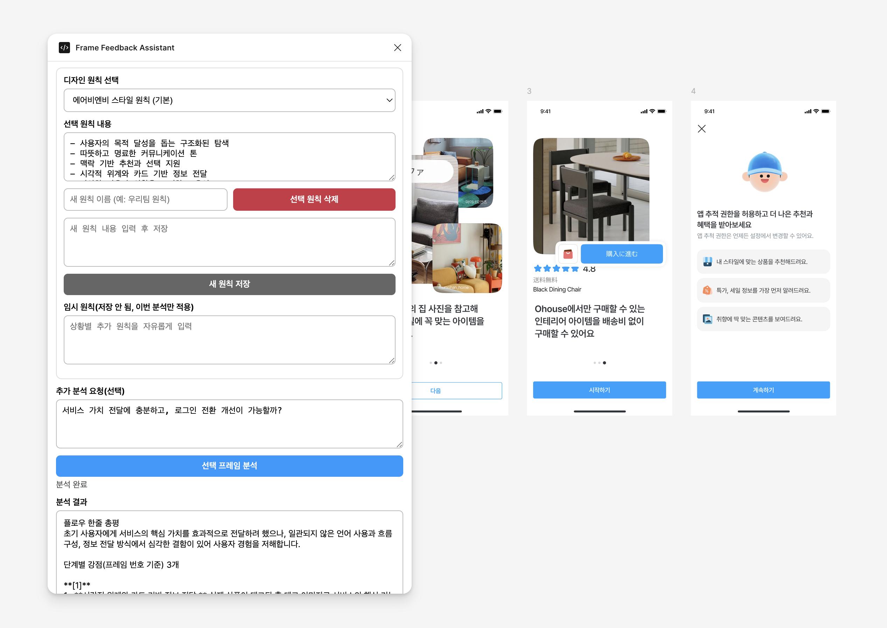
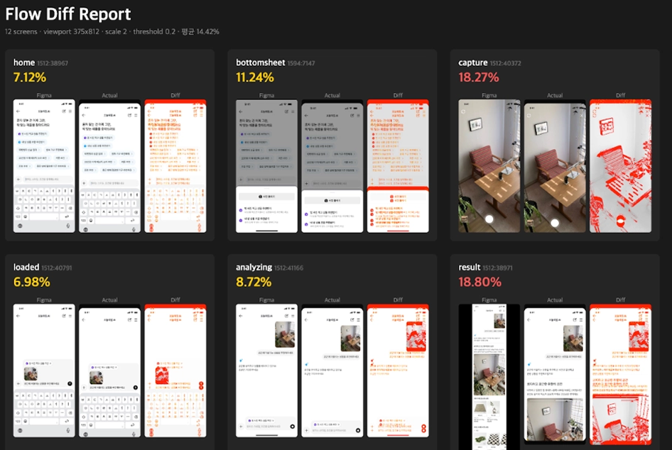
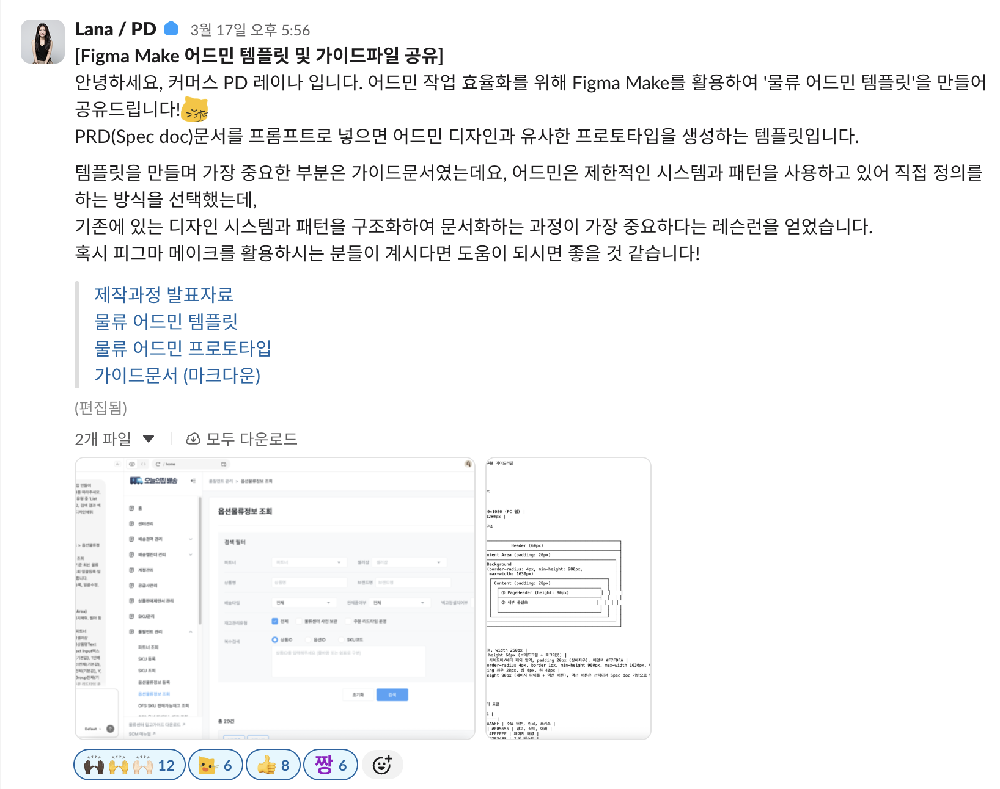

AI 시대,
디자인 리더의 역할
팀원이 AI를 스스로 잘 쓰게 만드는 법
오늘의집 PD팀 실험 로그
최근에 팀원에게 받은 피드백
AI를 잘 쓰게 될 줄 몰랐어요.
요한님이 방향성을 잡아주시고
계속 독려해주신 덕분인 것 같아요." — PD팀 팀원, 최근 1on1에서
오늘은— 팀원이 AI를 스스로 잘 쓰게 만드는 저만의 노하우를
전수해드리려고 합니다.
"팀원이 AI 잘 쓰는 리더"
전자는 1명만큼 레버리지가 생기고,
후자는 팀원 수만큼 레버리지가 생깁니다.
오늘 15분, 세 가지
PD팀의 AI 워크플로우
디자이너의 모든 단계에 AI가 녹아있는 구조
PD팀 워크플로우는 4개 Phase로 구성
단계마다 팀원이 직접 만든 AI 스킬·플러그인이 붙어있습니다.
임팩트·노력·리스크 스코링
가설 · 타겟 메트릭 자동 생성
데이터 → 인사이트 변환
PRD + ODS → HTML 프로토타입
UT 시나리오 · 태스크 플로우
다양한 정책과 엣지 케이스 탐지
AI 프로토타입 → Figma 정제
다각도 AI 크리틱 (원칙 기반)
스펙 + Figma 리소스 통합
Claude Code로 CSS·HTML 즉시 수정
카피 생성 · 맞춤법 체크
미디어 쿼리 자동 추가
워크플로우는 팀원이 직접 만듭니다
리더가 아니라 팀원이 자기 문제를 풀면서 나온 실제 결과물.
PRD + ODS 컴포넌트
→ 동작하는 HTML
디자인 시스템 토큰·컴포넌트를 그대로 먹이고, PRD를 붙이면 프로토타입이 "동작"하는 상태로 생성됩니다.
- Figma 링크 하나로 시작 · DS 토큰 자동 적용
- 브라우저에서 실제 인터랙션으로 UT
- 말이 아닌 동작으로 팀과 리뷰

다양한 정책과 엣지 케이스를
자동으로 시뮬레이션
쿠폰·할인·패키지 등 조건이 많은 영역에서 디자이너가 미처 보지 못한 상태를 AI가 대신 발견해줍니다.
- 상태 매트릭스 자동 생성 · 조건 토글로 즉시 확인
- PDP 쿠폰 영역 등 복잡한 비즈니스 룰 검증에 효과
- UT 전에 엣지 케이스 누락 사전 차단

디자인 원칙 기반
다각도 AI 크리틱
팀 디자인 원칙을 저장해두고, 선택한 프레임에 그 원칙으로 크리틱을 돌립니다.
- 원칙 프리셋 저장 / 임시 원칙 주입 모두 지원
- 플로우 한줄 총평 + 단계별 강점·약점 자동 생성
- "로그인 전환 개선 가능?" 같은 질문까지 반영

Pixel Diff로
오차 20% → 1%
ODS Foundation 토큰화 + 컴포넌트·아이콘 JS화 + Pixel Diff 루프. AI가 스스로 다시 맞춥니다.
- Figma ↔ HTML 히트맵 비교 → AI가 수정 포인트 스스로 식별
- 한 번의 시도로 최대 1% 미만까지 수렴
- 수정 반복 8회 이내 완료

리사이즈 대응을
한 줄로
DS-prototype으로 만든 결과물에 미디어 쿼리 플러그인을 붙이면, 반응형 대응이 그냥 따라옵니다.
- 데스크톱·태블릿·모바일 브레이크포인트 자동 감지
- Figma 화면과 시각적 일관성 유지
- QA 공수 감소 — 디자이너가 직접 조정 가능
팀원이 AI를 스스로 잘 쓰게 만드는
5가지 노하우
9개월 실험에서 나온 패턴
리더가 정하지 말고,
팀원이 발제하게 하세요
가장 시간 많이 들고, 가장 풀고 싶은 문제는 당사자가 제일 잘 압니다. 리더가 "이거 풀어봐"라고 떨어트리는 순간 주인의식이 사라집니다.
1on1에서 진짜 풀고 싶은 문제를 듣고,
AI 솔루션을 같이 아이데이션
전체 논의에서 나온 이슈 중 "내가 제일 풀고 싶은 건 이거"라는 개인의 진짜 관심사를 1on1에서 뽑아냅니다.
팀플 금지.
개인 오너십과 명확한 ETA
아이데이션한 액션 아이템은 절대 팀 프로젝트로 만들지 않습니다. 한 사람이 처음부터 끝까지 주도하게 하고, ETA를 명확히 박습니다.
결과물을 끊임없이 공유·
하이라이트해주세요
팀을 넘어 회사 전체로 공유합니다. 개인의 업적이 회사에 보이는 것—이것이 다음 과업의 연료입니다.
별도 과업 말고,
현재 하는 일에서 기회를 포착
"AI 과업"을 따로 부여하는 것보다, 지금 하고 있는 일에서 AI로 바꿀 포인트를 찾는 것이 훨씬 임팩트가 큽니다.
ETA 20일 → 6일 (70% 단축)
- 원래는 일반 물류 어드민 디자인 과업
- 디자인은 단순·반복, 정책은 복잡—동기부여 낮은 영역
- "이거야말로 AI 기회 아닐까?"—리더가 관점을 제시
- 과업 1/3은 현행대로 진행하며 패턴 파악
- 중간에 끊고, 패턴을 AI 템플릿화하는 과업 추가 부여

AI 시대, 리더의 역할
"AI 잘 쓴다"가 아니라 "AI로 큰 문제를 푼다"
리더가 잘 써야 할 건 AI가 아니라
"AI로 푸는 관점"
다행이라고 생각합니다.
팀원들이 AI를 열심히 탐구하고,
저는 1on1에서 그 정보를 가장 많이 듣고 활용할 수 있는 포지션입니다.
질문과 토론
여러분 팀에서 가장 풀고 싶은 문제를
오늘 누구에게 "네가 발제해볼래?"
라고 해볼 수 있을까요?